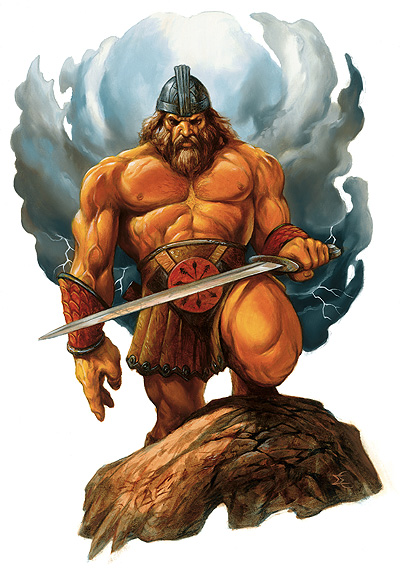
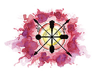

寇德（Kord）

搏斗者
中等神力
圣徽：刺锤之星

居住位面：Ysgard
阵营：混乱善良
神职：力量，运动，体育，搏斗，勇气
信徒：野蛮人，战士，游荡者，运动员
牧师阵营：混乱善良，守序善良，中立善良
领域：混乱，善良，机运，力量
偏好武器：巨剑
力量之神寇德一般以一位留着火红色的长发与长须的，体型壮硕且肌肉健美的，身着白龙皮制的手套，蓝色靴子和红色战斗腰带的男子形象示人。他是个享乐主义论者，这一点为所有了解他的那些试图挑战各种自身极限的人所了解。还有传闻说寇德喜欢玩弄那些长相漂亮的人类，精灵，甚至是巨人女性，而据说有些伟大的英雄就是这样诞生的。他凭借着他的智慧以及他那把屠龙巨剑“凯尔玛”战斗与挑战着，并且，每当他被伤到的时候，他会进入一种激烈的狂暴状态。
教义
寇德热爱所有挑战自身极限和挑战强大力量的人，并且他鼓励人们用进行一些并不会有致命危险的体育运动的方式来解决争端。他的谕旨中曾这样说，强壮者与健康者必须要领导体弱者，而勇敢则是一个人所能拥有的最高最好最正面的品质，在一点上，统治者与民众是一样的。按寇德的说法，任何人都有权嘲笑和蔑视胆小鬼。
神职人员与牧师
寇德的牧师往往被认为是领导者的好材料。他们以力量为第一要素，而不是支配。他们努力将民众训练得更强，并组织体育竞赛，鼓励民众参与这些挑战自身极限的活动。质疑一位寇德的牧师的健康与强壮，那无疑是对他最大的侮辱，寇德的牧师往往要做太多太多的事情，仅仅为了让自身变得更强（尽管如此，他们能清楚地分辨出困难的挑战与自杀性的挑战的区别）。他们所偏好的服装为红色和白色。
寇德的神殿一般是占地广阔切通风良好的。他们一般至少包括一个体操房和若干浴室。当然，所有的寇德的神殿一定隔邻着大型的体育场。
寇德
战士20级/野蛮人20级
中体形外界生物（混乱善良）
神格等级：14
生命骰：20d8+200（外界生物）加20d10+200（战士）加20d12+200（野蛮人）（1200hp）
先攻调整值：+12（+8敏捷，+4精通先攻）
速度：70尺
防御等级：68（+8敏捷，+14神格等级，+27天生防御，+9偏转）
攻击加值：凯尔玛（+5巨剑） +86/+81/+76/+71近战；或者法术 +76近战接触或 +62远程接触
伤害：凯尔玛（+5巨剑） 2d6+54/17-20；或者使用法术
占据/威胁范围：5尺*5尺/5尺
特殊攻击：领域神力，超凡神格能力，类法术能力
特性：神格免疫，伤害减免 49/+4，火元素伤害抗力 35，音波元素伤害抗力 34，快速医疗 34，神术自发性施法，理解、交谈及阅读所有语言并直接于任何15里内的生命存在交谈，远程沟通，神祗国度，随意无误传送，随意位面旅行，快速移动，离奇闪避，SR46，神力光环（1400尺，DC33）
豁免调整值：坚韧 +58，反射 +54，意志 +53
能力值：力量 55，敏捷 27，体质 30，智力 24，感知 24，魅力 29
技能调整值：平衡感 +26，唬骗 +46，攀爬 +76，专注 +47，交涉 +29，脱逃术 +45，驯养动物 +43，躲藏 +45，威吓 +45，方向感 +41，跳跃 +103，聆听 +64，潜行 +48，表演 +46，骑术（马） +64，搜索 +54，察言观色 +54，侦察 +57，游泳 +99，翻滚 +61，绳技 +36，野外知识 +51，技能检定掷骰自然结果总是取20
专长：盲斗，顺势劈，格斗反射，拨挡飞箭，闪避，忍耐，专家，高级顺势劈，强韧加强，精通冲撞，精通重击（巨剑），精通重击（徒手打击），精通卸除武器，精通擒抱，精通先攻，精通绊摔，精通徒手打击，机动，猛力攻击，即时备战，飞跑，跳跃攻击，震慑拳，精通破坏武器，高级专家，追踪，武器专攻（巨剑），武器专攻（徒手打击），武器专精（巨剑），武器专精（徒手打击），旋风攻击
神格免疫：属性伤害，属性吸取，酸，冷，即死效果，疾病，瓦解，电，能量吸取，心智影响效果，麻痹，毒，睡眠，震慑，变形，监禁，放逐。
超凡神格能力：改变现实，改变大小，区域神力护盾，天神下凡，神力战斗熟稔，神力风暴，神力祝福（力量），神力快速医疗，神力灵感（勇气），神力狂暴，神力护盾，神力武器专攻（巨剑），神力武器专精（巨剑），额外领域（机运），额外元素抗力（音波），生命礼物，不屈力量。
领域神力：施展混乱领域法术时，施法者等级加1；施展善良领域法术时，施法者等级加1；每日14次重掷不满意其结果的掷骰；每日14次力量专长（持续1轮得到+14力量增强加值）
类法术能力：寇德可以相当于施法者等级为25级使用善良领域和混乱领域类法术能力，以相当于施法者等级为24使用其他类法术能力。类法术能力的基本豁免DC为34+法术等级。Aid,animate objects,Bigby's clench fist Bigby's crushing hand,Bigby's grasping hand,blade barrier,Break enchantment,bull's strength,chaos hammer,cloak of chaos,circle of doom,contagion,create undead,desecrate,dictum,disintegrate,diepel law,despel evil,endure elements,entropoic shield,freedom of movement,holy aura,holy smite,holy word,magic circle against evil,magic circle against law,magic vestment,miracle,mislead,protection from evil,protection from law,righteous might,shatter,spell immunity,spell turning,shoneskin,summon monsterIX（仅限以混乱领域或善良领域法术施展）word of chaos
神力狂暴：以下数据在寇德狂暴后发生作用：防御等级63；1500hp；攻击加值 +91/+86/+81/+76/近战（2d6+59/17-20，+5巨剑）；特性 火元素伤害抗力 44，音波伤害抗力 44，SR56；豁免 坚韧 +63，意志 +58；力量 65，体质 40；攀爬 +81，集中 +52，跳跃 +108，游泳 +104，他每日可以狂暴14次，每次可以持续1小时（或者由寇德自己终止），狂暴后他不会感到疲累。
财产：寇德所有的巨剑“凯尔玛”，是一把对龙具有特殊伤害的非常坚硬的武器。凯尔玛是具有智慧的，它具有智力，感知和魅力三项属性，数值均为24。它具有语言和心灵感应的能力。它属于混乱中立阵营，并具可随意施展以下特殊能力：侦测守序邪恶阵营，find traps,detect magic,locate object（120尺范围），和true seeing。它也可以每日使用三次detect thoughts。凯尔玛内具有的消灭所有守序邪恶的龙类的意图。当用此剑攻击这类龙时，龙需做一次意志检定（DC23），失败则死亡。制造施法者等级为 20级，重15磅
其他神格能力
作为一个中等神力，寇德在任何掷骰中自动取20，库尔图马克在攻击检定和豁免检定掷骰自然值出1时，并不视作必然失败，而是视作普通失败。他是不朽的。
感知：寇德可以看见，听见，触摸和嗅到14哩的距离。作为一个标准动作，他能够感知到任何动物，他的信徒，圣迹，与他有关的物体和任何他的名字在一个小时内被说出的地点周围14哩内的一切。他能够立即将他的感知延伸到10个地方。他立即能够在2个地方阻止神格等级等于或者小于他的神的感知力量，时间最长可达14个小时。
神职感知：寇德可以在事情的发生前14周，发生后14周，或发生时立刻感知到任何勇敢的行为。他也同样可以感知到任何体育竞赛以及凡尘间的人们在体育上取得的卓越成果。
自动动作：寇德能够以一个自由动作使用任何以力量和敏捷为关键属性的的技能，只要该项任务的DC在25或者更低。但是，这些技能必须是寇德在其上拥有级数的，或者在未受训的状态下可以使用，它们才能被寇德以一个自由动作施展。寇德不能以自由动作完成移动或者移动的一部分。同样的，寇德可以完成任何直接需要使用力量和敏捷检定的动作。比如，寇德可以以一个自由动作直接破门，但他却不能以自由动作跳跃，攀爬和游泳，因为后三项属于移动动作。他每轮能够完成10 个类似的自由动作。
创造魔法物品：寇德能够创造任何魔法简单武器与军用武器，以及任何能提升人们身体能力（力量，敏捷，或体质）的魔法物品，只要物品的交易价格不超过200000GP。
化身
寇德很少利用化身，他更喜欢自己亲身去世界中体会和游历，但是，他偶尔也会派遣化身去为某位做到某种优秀成绩的运动员或是冒险者
庆祝一番，或者是用来监视某项重大比赛的公平性。
寇德的化身：如同寇德的本体，但以下除外：神格等级7；防御等级54（接触34，措手不及54）；攻击加值 +79/+69/+64近战（2d6+47/19-20，+5巨剑）或者法术 +69近战接触或 +55远程接触；特性 伤害减免 42/+4，火元素伤害抗力 27，SR39，神力光环（700尺，DC26）；豁免调整值 坚韧 +51，反射 +47，意志 +46；所有技能调整值减7
超凡神格能力：神力战斗熟稔，神力快速医疗，神力灵感（勇气），神力狂暴，神力护盾，神力武器专攻（巨剑），神力武器专精（巨剑），额外领域（机运），额外元素抗力（音波），不屈力量。
神力狂暴：以下数据在寇德的化身狂暴后发生作用：防御等级49；1500hp；攻击加值 +84/+79/+74/+69/+64近战（2d6+52/19-20，+5巨剑）；特性 火元素伤害抗力 37，音波伤害抗力 37，SR49；豁免 坚韧 +56，意志 +51；力量 65，体质 40；攀爬 +74，集中 +45，跳跃 +101，游泳 +97，他每日可以狂暴7次，每次可以持续1小时（或者由寇德自己终止），狂暴后他不会感到疲累。
类法术能力：施法者等级为17级，基本豁免DC为26+法术等级。